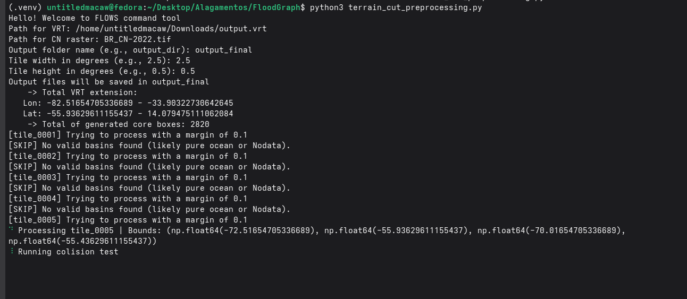
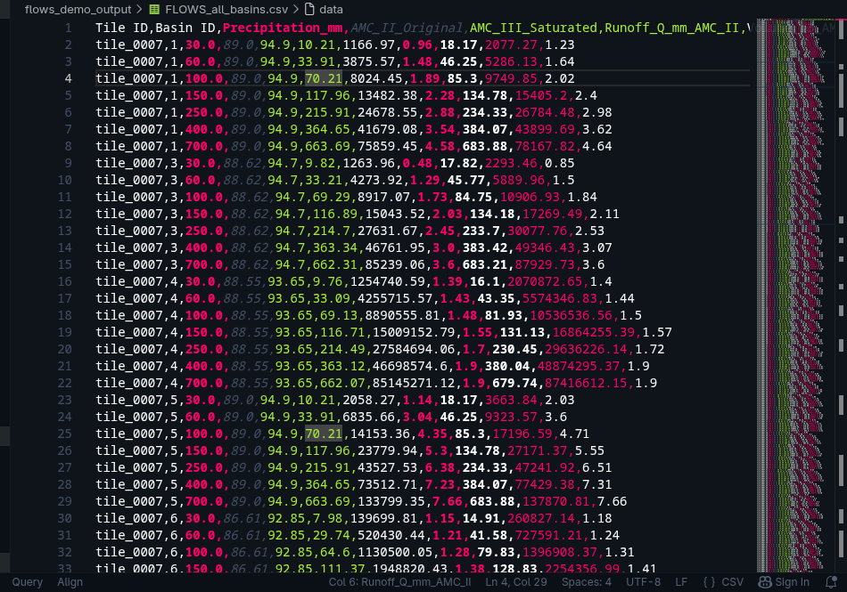
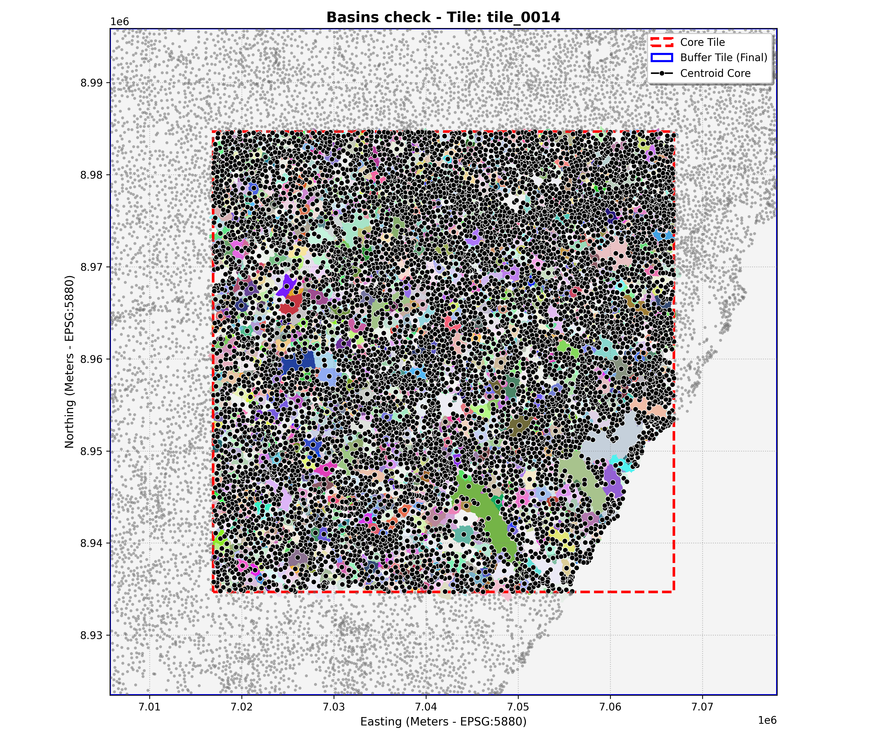
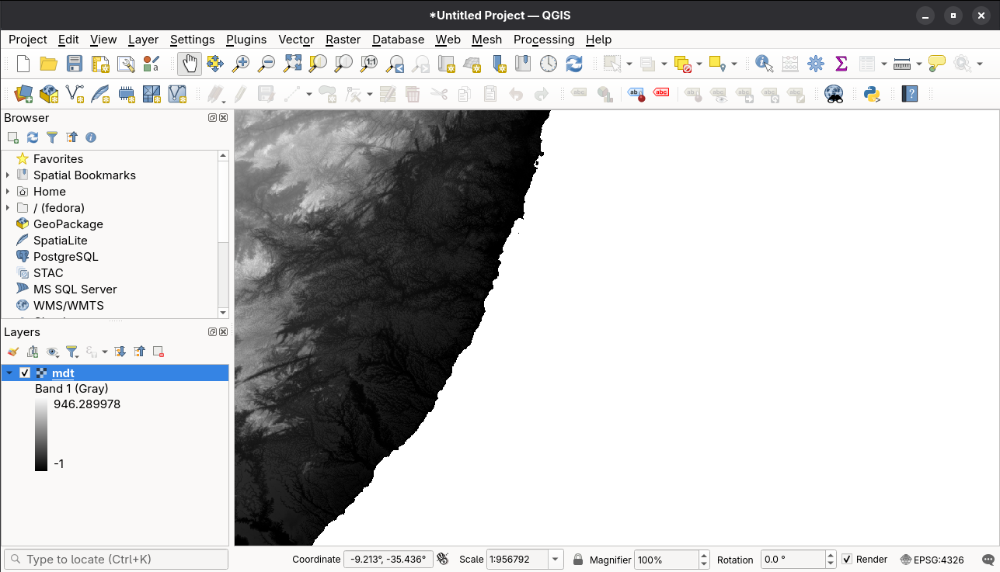

Flood Risk Likelihood from pre-compiled Watershed Analysis
A python tool for generating and evaluating flood-risk data without relying on constant hydrodynamic simulation and high-end hardware

About
Rather than dealing with complex hydrodynamic models, FLOWS analyses the terrain and finds bowl-like depressions - where water tends to accumulate in the terrain - and their contributing areas (where rainwater flows down until it gets trapped in a respective bowl-like depression) so it can analyses them.
How it works
- Area
- Water height for each rainfall and moisture scenarios
- Where that basin is in the map
- Rainfall infiltration data
See it in action
This is the output generated by the FLOWS command tool when running a demo version. More about how to run it on GitHub
Command:
(.venv) ./FLOWS_Beta_Linux_x64-GLIBC
Output:
[2026-10-13 16:20:44] Log will be saved in flows_demo_output/log.txt
[2026-10-13 16:20:45] [STATUS] Generating grid
[2026-10-13 16:20:45] -> Total VRT extension:
Lon: 6966900.0 - 7113660.0
Lat: 8734680.0 - 9056940.0
[2026-10-13 16:20:45] -> Total of generated core boxes: 21
[2026-10-13 16:20:45] [STATUS] Processing tile_0001 | Bounds: (np.float64(6966900.0), np.float64(8734680.0), np.float64(7016900.0), np.float64(8784680.0))
[2026-10-13 16:20:45] [tile_0001] Trying to process with a margin of 11200
[2026-10-13 16:20:45] [STATUS] Running WhiteboxTools
[2026-10-13 16:20:47] [STATUS] Running colision test
[2026-10-13 16:20:48] [SKIP] No valid basins found (likely pure ocean or Nodata).
[2026-10-13 16:20:48] [STATUS] Processing tile_0002 | Bounds: (np.float64(7016900.0), np.float64(8734680.0), np.float64(7066900.0), np.float64(8784680.0))
[2026-10-13 16:20:48] [tile_0002] Trying to process with a margin of 11200
[2026-10-13 16:20:49] [STATUS] Running WhiteboxTools
[2026-10-13 16:20:50] [STATUS] Running colision test
[2026-10-13 16:20:51] [SKIP] No valid basins found (likely pure ocean or Nodata).
[2026-10-13 16:20:51] [STATUS] Processing tile_0003 | Bounds: (np.float64(7066900.0), np.float64(8734680.0), 7113660.0, np.float64(8784680.0))
[2026-10-13 16:20:51] [tile_0003] Trying to process with a margin of 11200
[2026-10-13 16:20:52] [STATUS] Running WhiteboxTools
[2026-10-13 16:20:53] [STATUS] Running colision test
[2026-10-13 16:20:54] [SKIP] No valid basins found (likely pure ocean or Nodata).
[2026-10-13 16:20:54] [STATUS] Processing tile_0004 | Bounds: (np.float64(6966900.0), np.float64(8784680.0), np.float64(7016900.0), np.float64(8834680.0))
[2026-10-13 16:20:54] [tile_0004] Trying to process with a margin of 11200
[2026-10-13 16:20:54] [STATUS] Running WhiteboxTools
[2026-10-13 16:20:56] [STATUS] Running colision test
[2026-10-13 16:20:59] [SKIP] No valid basins found (likely pure ocean or Nodata).
[2026-10-13 16:20:59] [STATUS] Processing tile_0005 | Bounds: (np.float64(7016900.0), np.float64(8784680.0), np.float64(7066900.0), np.float64(8834680.0))
[2026-10-13 16:20:59] [tile_0005] Trying to process with a margin of 11200
[2026-10-13 16:20:59] [STATUS] Running WhiteboxTools
[2026-10-13 16:21:01] [STATUS] Running colision test
[2026-10-13 16:21:02] [SKIP] No valid basins found (likely pure ocean or Nodata).
[2026-10-13 16:21:02] [STATUS] Processing tile_0006 | Bounds: (np.float64(7066900.0), np.float64(8784680.0), 7113660.0, np.float64(8834680.0))
[2026-10-13 16:21:02] [tile_0006] Trying to process with a margin of 11200
[2026-10-13 16:21:02] [STATUS] Running WhiteboxTools
[2026-10-13 16:21:04] [STATUS] Running colision test
[2026-10-13 16:21:05] [SKIP] No valid basins found (likely pure ocean or Nodata).
[2026-10-13 16:21:05] [STATUS] Processing tile_0007 | Bounds: (np.float64(6966900.0), np.float64(8834680.0), np.float64(7016900.0), np.float64(8884680.0))
[2026-10-13 16:21:05] [tile_0007] Trying to process with a margin of 11200
[2026-10-13 16:21:05] [STATUS] Running WhiteboxTools
[2026-10-13 16:21:07] [STATUS] Running colision test
[2026-10-13 16:21:10] [SUCESS] All interesting basins fit within a buffer of 11200
[2026-10-13 16:21:11] [STATUS] Applying mask to keep only basins of interest
[2026-10-13 16:21:11] -> Total area processed: 5240.31 km2
[2026-10-13 16:21:11] -> Mask applied!
[2026-10-13 16:21:11] [STATUS] Generating image
[2026-10-13 16:21:21] -> Image stored as: diagnostic_tile_0007.png
[2026-10-13 16:21:21] [STATUS] Calculating worst-case hydrological scenarios
Alonside some other important stuff
[2026-10-13 16:21:22] -> Core basin vector stored as: core_basins_tile_0007.gpkg
[2026-10-13 16:21:22] -> Skipping basin 2: No valid CN data.
[2026-10-13 16:21:52] -> Regenerated CSV table as: flows_table_tile_0007.csv
[2026-10-13 16:21:52] [STATUS] Processing tile_0008 | Bounds: (np.float64(7016900.0), np.float64(8834680.0), np.float64(7066900.0), np.float64(8884680.0))
[2026-10-13 16:21:52] [tile_0008] Trying to process with a margin of 11200
[2026-10-13 16:21:52] [STATUS] Running WhiteboxTools
[2026-10-13 16:21:54] [STATUS] Running colision test
[2026-10-13 16:21:56] [SKIP] No valid basins found (likely pure ocean or Nodata).
[2026-10-13 16:21:56] [STATUS] Processing tile_0009 | Bounds: (np.float64(7066900.0), np.float64(8834680.0), 7113660.0, np.float64(8884680.0))
[2026-10-13 16:21:56] [tile_0009] Trying to process with a margin of 11200
[2026-10-13 16:21:57] [STATUS] Running WhiteboxTools
[2026-10-13 16:21:58] [STATUS] Running colision test
[2026-10-13 16:21:58] [SKIP] No valid basins found (likely pure ocean or Nodata).
[2026-10-13 16:21:58] [STATUS] Processing tile_0010 | Bounds: (np.float64(6966900.0), np.float64(8884680.0), np.float64(7016900.0), np.float64(8934680.0))
[2026-10-13 16:21:58] [tile_0010] Trying to process with a margin of 11200
[2026-10-13 16:22:00] [STATUS] Running WhiteboxTools
[2026-10-13 16:22:02] [STATUS] Running colision test
[2026-10-13 16:22:04] [SUCESS] All interesting basins fit within a buffer of 11200
[2026-10-13 16:22:04] [STATUS] Applying mask to keep only basins of interest
[2026-10-13 16:22:04] -> Total area processed: 5240.31 km2
[2026-10-13 16:22:04] -> Mask applied!
[2026-10-13 16:22:04] [STATUS] Generating image
[2026-10-13 16:22:17] -> Image stored as: diagnostic_tile_0010.png
[2026-10-13 16:22:17] [STATUS] Calculating worst-case hydrological scenarios
Alonside some other important stuff
[2026-10-13 16:22:18] -> Core basin vector stored as: core_basins_tile_0010.gpkg
[2026-10-13 16:23:27] -> Regenerated CSV table as: flows_table_tile_0010.csv
[2026-10-13 16:23:27] [STATUS] Processing tile_0011 | Bounds: (np.float64(7016900.0), np.float64(8884680.0), np.float64(7066900.0), np.float64(8934680.0))
[2026-10-13 16:23:27] [tile_0011] Trying to process with a margin of 11200
[2026-10-13 16:23:28] [STATUS] Running WhiteboxTools
[2026-10-13 16:23:30] [STATUS] Running colision test
[2026-10-13 16:23:32] [SUCESS] All interesting basins fit within a buffer of 11200
[2026-10-13 16:23:33] [STATUS] Applying mask to keep only basins of interest
[2026-10-13 16:23:33] -> Total area processed: 5240.31 km2
[2026-10-13 16:23:33] -> Mask applied!
[2026-10-13 16:23:33] [STATUS] Generating image
[2026-10-13 16:23:42] -> Image stored as: diagnostic_tile_0011.png
[2026-10-13 16:23:42] [STATUS] Calculating worst-case hydrological scenarios
Alonside some other important stuff
[2026-10-13 16:23:43] -> Core basin vector stored as: core_basins_tile_0011.gpkg
[2026-10-13 16:24:17] -> Regenerated CSV table as: flows_table_tile_0011.csv
[2026-10-13 16:24:17] [STATUS] Processing tile_0012 | Bounds: (np.float64(7066900.0), np.float64(8884680.0), 7113660.0, np.float64(8934680.0))
[2026-10-13 16:24:17] [tile_0012] Trying to process with a margin of 11200
[2026-10-13 16:24:18] [STATUS] Running WhiteboxTools
[2026-10-13 16:24:19] [STATUS] Running colision test
[2026-10-13 16:24:21] [SKIP] No valid basins found (likely pure ocean or Nodata).
[2026-10-13 16:24:21] [STATUS] Processing tile_0013 | Bounds: (np.float64(6966900.0), np.float64(8934680.0), np.float64(7016900.0), np.float64(8984680.0))
[2026-10-13 16:24:21] [tile_0013] Trying to process with a margin of 11200
[2026-10-13 16:24:23] [STATUS] Running WhiteboxTools
[2026-10-13 16:24:24] [STATUS] Running colision test
[2026-10-13 16:24:26] [SUCESS] All interesting basins fit within a buffer of 11200
[2026-10-13 16:24:27] [STATUS] Applying mask to keep only basins of interest
[2026-10-13 16:24:27] -> Total area processed: 5240.31 km2
[2026-10-13 16:24:27] -> Mask applied!
[2026-10-13 16:24:27] [STATUS] Generating image
[2026-10-13 16:24:39] -> Image stored as: diagnostic_tile_0013.png
[2026-10-13 16:24:39] [STATUS] Calculating worst-case hydrological scenarios
Alonside some other important stuff
[2026-10-13 16:24:41] -> Core basin vector stored as: core_basins_tile_0013.gpkg
[2026-10-13 16:25:35] -> Regenerated CSV table as: flows_table_tile_0013.csv
[2026-10-13 16:25:35] [STATUS] Processing tile_0014 | Bounds: (np.float64(7016900.0), np.float64(8934680.0), np.float64(7066900.0), np.float64(8984680.0))
[2026-10-13 16:25:35] [tile_0014] Trying to process with a margin of 11200
[2026-10-13 16:25:36] [STATUS] Running WhiteboxTools
[2026-10-13 16:25:38] [STATUS] Running colision test
[2026-10-13 16:25:40] [SUCESS] All interesting basins fit within a buffer of 11200
[2026-10-13 16:25:40] [STATUS] Applying mask to keep only basins of interest
[2026-10-13 16:25:40] -> Total area processed: 5240.31 km2
[2026-10-13 16:25:41] -> Mask applied!
[2026-10-13 16:25:41] [STATUS] Generating image
[2026-10-13 16:25:58] -> Image stored as: diagnostic_tile_0014.png
[2026-10-13 16:25:58] [STATUS] Calculating worst-case hydrological scenarios
Alonside some other important stuff
[2026-10-13 16:25:59] -> Core basin vector stored as: core_basins_tile_0014.gpkg
[2026-10-13 16:27:22] -> Regenerated CSV table as: flows_table_tile_0014.csv
[2026-10-13 16:27:22] [STATUS] Processing tile_0015 | Bounds: (np.float64(7066900.0), np.float64(8934680.0), 7113660.0, np.float64(8984680.0))
[2026-10-13 16:27:22] [tile_0015] Trying to process with a margin of 11200
[2026-10-13 16:27:23] [STATUS] Running WhiteboxTools
[2026-10-13 16:27:24] [STATUS] Running colision test
[2026-10-13 16:27:27] [SUCESS] All interesting basins fit within a buffer of 11200
[2026-10-13 16:27:27] [STATUS] Applying mask to keep only basins of interest
[2026-10-13 16:27:27] -> Total area processed: 5005.77 km2
[2026-10-13 16:27:27] -> Mask applied!
[2026-10-13 16:27:27] [STATUS] Generating image
[2026-10-13 16:27:33] -> Image stored as: diagnostic_tile_0015.png
[2026-10-13 16:27:33] [STATUS] Calculating worst-case hydrological scenarios
Alonside some other important stuff
[2026-10-13 16:27:33] -> Core basin vector stored as: core_basins_tile_0015.gpkg
[2026-10-13 16:27:44] -> Regenerated CSV table as: flows_table_tile_0015.csv
[2026-10-13 16:27:44] [STATUS] Processing tile_0016 | Bounds: (np.float64(6966900.0), np.float64(8984680.0), np.float64(7016900.0), np.float64(9034680.0))
[2026-10-13 16:27:44] [tile_0016] Trying to process with a margin of 11200
[2026-10-13 16:27:45] [STATUS] Running WhiteboxTools
[2026-10-13 16:27:47] [STATUS] Running colision test
[2026-10-13 16:27:49] [SUCESS] All interesting basins fit within a buffer of 11200
[2026-10-13 16:27:49] [STATUS] Applying mask to keep only basins of interest
[2026-10-13 16:27:49] -> Total area processed: 5240.31 km2
[2026-10-13 16:27:49] -> Mask applied!
[2026-10-13 16:27:49] [STATUS] Generating image
[2026-10-13 16:27:59] -> Image stored as: diagnostic_tile_0016.png
[2026-10-13 16:27:59] [STATUS] Calculating worst-case hydrological scenarios
Alonside some other important stuff
[2026-10-13 16:28:00] -> Core basin vector stored as: core_basins_tile_0016.gpkg
[2026-10-13 16:28:42] -> Regenerated CSV table as: flows_table_tile_0016.csv
[2026-10-13 16:28:42] [STATUS] Processing tile_0017 | Bounds: (np.float64(7016900.0), np.float64(8984680.0), np.float64(7066900.0), np.float64(9034680.0))
[2026-10-13 16:28:42] [tile_0017] Trying to process with a margin of 11200
[2026-10-13 16:28:44] [STATUS] Running WhiteboxTools
[2026-10-13 16:28:46] [STATUS] Running colision test
[2026-10-13 16:28:48] [SUCESS] All interesting basins fit within a buffer of 11200
[2026-10-13 16:28:48] [STATUS] Applying mask to keep only basins of interest
[2026-10-13 16:28:48] -> Total area processed: 5240.31 km2
[2026-10-13 16:28:48] -> Mask applied!
[2026-10-13 16:28:48] [STATUS] Generating image
[2026-10-13 16:29:07] -> Image stored as: diagnostic_tile_0017.png
[2026-10-13 16:29:07] [STATUS] Calculating worst-case hydrological scenarios
Alonside some other important stuff
[2026-10-13 16:29:09] -> Core basin vector stored as: core_basins_tile_0017.gpkg
[2026-10-13 16:30:35] -> Regenerated CSV table as: flows_table_tile_0017.csv
[2026-10-13 16:30:35] [STATUS] Processing tile_0018 | Bounds: (np.float64(7066900.0), np.float64(8984680.0), 7113660.0, np.float64(9034680.0))
[2026-10-13 16:30:35] [tile_0018] Trying to process with a margin of 11200
[2026-10-13 16:30:37] [STATUS] Running WhiteboxTools
[2026-10-13 16:30:38] [STATUS] Running colision test
[2026-10-13 16:30:40] [SUCESS] All interesting basins fit within a buffer of 11200
[2026-10-13 16:30:41] [STATUS] Applying mask to keep only basins of interest
[2026-10-13 16:30:41] -> Total area processed: 5005.77 km2
[2026-10-13 16:30:41] -> Mask applied!
[2026-10-13 16:30:41] [STATUS] Generating image
[2026-10-13 16:30:53] -> Image stored as: diagnostic_tile_0018.png
[2026-10-13 16:30:53] [STATUS] Calculating worst-case hydrological scenarios
Alonside some other important stuff
[2026-10-13 16:30:54] -> Core basin vector stored as: core_basins_tile_0018.gpkg
[2026-10-13 16:31:43] -> Regenerated CSV table as: flows_table_tile_0018.csv
[2026-10-13 16:31:43] [STATUS] Processing tile_0019 | Bounds: (np.float64(6966900.0), np.float64(9034680.0), np.float64(7016900.0), 9056940.0)
[2026-10-13 16:31:43] [tile_0019] Trying to process with a margin of 11200
[2026-10-13 16:31:44] [STATUS] Running WhiteboxTools
[2026-10-13 16:31:45] [STATUS] Running colision test
[2026-10-13 16:31:46] [SUCESS] All interesting basins fit within a buffer of 11200
[2026-10-13 16:31:46] [STATUS] Applying mask to keep only basins of interest
[2026-10-13 16:31:46] -> Total area processed: 3233.66 km2
[2026-10-13 16:31:46] -> Mask applied!
[2026-10-13 16:31:46] [STATUS] Generating image
[2026-10-13 16:31:50] -> Image stored as: diagnostic_tile_0019.png
[2026-10-13 16:31:50] [STATUS] Calculating worst-case hydrological scenarios
Alonside some other important stuff
[2026-10-13 16:31:51] -> Core basin vector stored as: core_basins_tile_0019.gpkg
[2026-10-13 16:31:57] -> Regenerated CSV table as: flows_table_tile_0019.csv
[2026-10-13 16:31:57] [STATUS] Processing tile_0020 | Bounds: (np.float64(7016900.0), np.float64(9034680.0), np.float64(7066900.0), 9056940.0)
[2026-10-13 16:31:57] [tile_0020] Trying to process with a margin of 11200
[2026-10-13 16:31:58] [STATUS] Running WhiteboxTools
[2026-10-13 16:31:59] [STATUS] Running colision test
[2026-10-13 16:32:00] [SUCESS] All interesting basins fit within a buffer of 11200
[2026-10-13 16:32:00] [STATUS] Applying mask to keep only basins of interest
[2026-10-13 16:32:00] -> Total area processed: 3233.66 km2
[2026-10-13 16:32:00] -> Mask applied!
[2026-10-13 16:32:00] [STATUS] Generating image
[2026-10-13 16:32:07] -> Image stored as: diagnostic_tile_0020.png
[2026-10-13 16:32:07] [STATUS] Calculating worst-case hydrological scenarios
Alonside some other important stuff
[2026-10-13 16:32:08] -> Core basin vector stored as: core_basins_tile_0020.gpkg
[2026-10-13 16:32:23] -> Regenerated CSV table as: flows_table_tile_0020.csv
[2026-10-13 16:32:23] [STATUS] Processing tile_0021 | Bounds: (np.float64(7066900.0), np.float64(9034680.0), 7113660.0, 9056940.0)
[2026-10-13 16:32:23] [tile_0021] Trying to process with a margin of 11200
[2026-10-13 16:32:24] [STATUS] Running WhiteboxTools
[2026-10-13 16:32:25] [STATUS] Running colision test
[2026-10-13 16:32:26] [SUCESS] All interesting basins fit within a buffer of 11200
[2026-10-13 16:32:27] [STATUS] Applying mask to keep only basins of interest
[2026-10-13 16:32:27] -> Total area processed: 3088.93 km2
[2026-10-13 16:32:27] -> Mask applied!
[2026-10-13 16:32:27] [STATUS] Generating image
[2026-10-13 16:32:33] -> Image stored as: diagnostic_tile_0021.png
[2026-10-13 16:32:33] [STATUS] Calculating worst-case hydrological scenarios
Alonside some other important stuff
[2026-10-13 16:32:34] -> Core basin vector stored as: core_basins_tile_0021.gpkg
[2026-10-13 16:32:48] -> Regenerated CSV table as: flows_table_tile_0021.csv
[2026-10-13 16:32:48] [STATUS] Uniting CSV files
[2026-10-13 16:32:52] [SUCCESS] Final table stored on flows_demo_output/FLOWS_all_basins.csv
[2026-10-13 16:32:52] -> Total of lines: 346787
[2026-10-13 16:32:52] [STATUS] Generating main GeoPackage and cleaning auxiliaries
[2026-10-13 16:32:54] -> Merged map saved as FLOWS_basins_map.gpkg
[2026-10-13 16:32:54] -> Temporary files removed sucessfully
[2026-10-13 16:32:54] [END OF RUNTIME] Program finished
[2026-10-13 16:32:54] Total elapsed time: 12m 9s



Current progress
Next steps are to:
- Compile the dataset to the entire Brazilian territory (in progress)
- Test on real life events (up next / being taken care of)
So far, this is dataset preprocessing current progress: